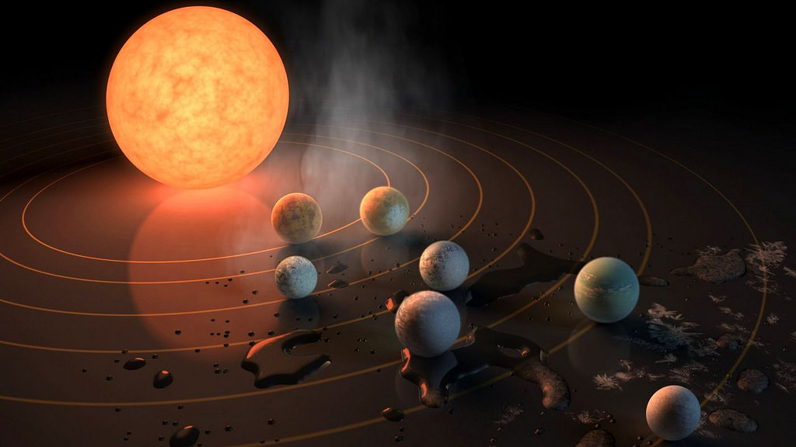
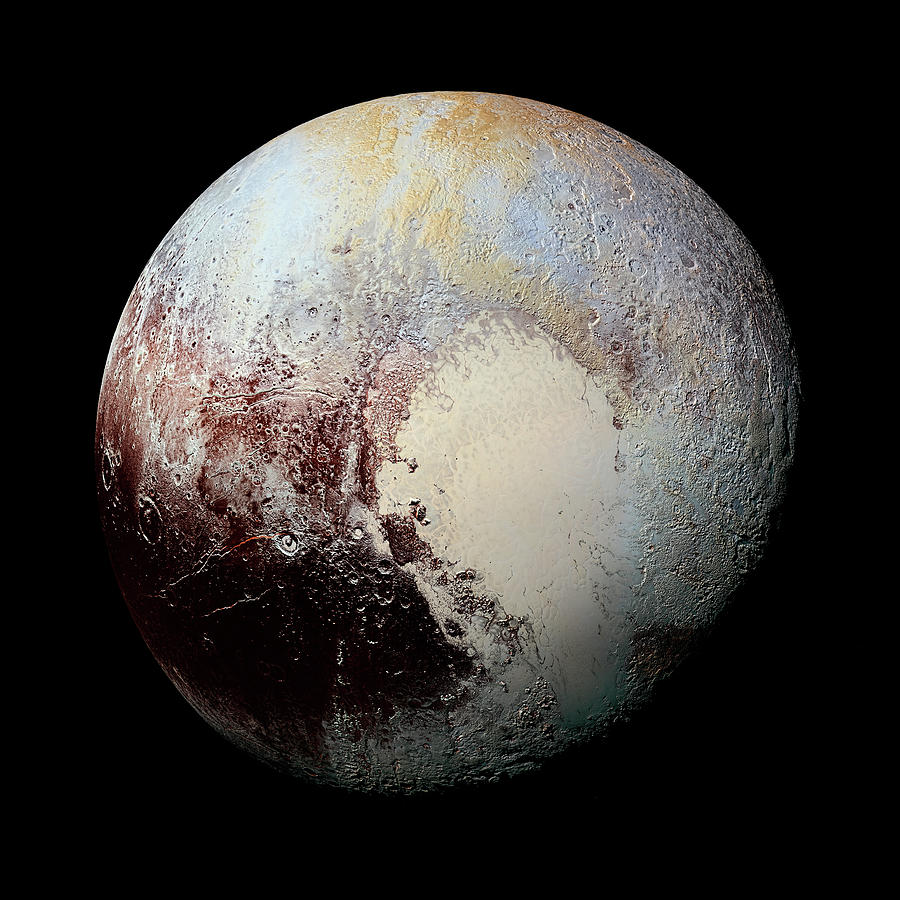

Primeval Black Holes Could Reveal How the Universe Formed

Copyright: Rafi Letzter, Staff Writer
Very close to the very beginning, scientists think, there were black holes.
These black holes, which astronomers have never directly detected, didn't form in the usual way: the explosive collapse of a big, dying star into its own gravity well. The matter in these black holes, researchers believe, wasn't crushed into a singularity by the last gasps of an old star.
Indeed, back then, in the first 1 billion or so years of the universe, there were no old stars. Instead, there were huge clouds of matter, filling space, seeding the earliest galaxies. Some of that matter, researchers believe, clumped together more tightly, though, collapsing into its own gravity well just like old stars later did as the universe aged. Those collapses, researchers believe, seeded supermassive black holes that had no previous life as stars. Astronomers call these singularities "direct collapse black holes" (DCBHs).
"We predict that the forthcoming James Webb Space Telescope might be able to detect and distinguish a young galaxy that hosts a direct-collapse black hole… with as little as a 20,000-second [5.56-hour] total exposure time," - the researchers wrote.
(Later, they noted that there were some "crude" elements to that timing estimate.)
The problem with this theory, though, is that nobody has ever found one. [The 18 Biggest Unsolved Mysteries in Physics]
But that could change. A new paper from the Georgia Institute of Technology published Sept. 10 in the journal Nature Astronomyproposes that the James Webb Space Telescope (JWST), which NASA intends to launch at some point in the next several years, should be sensitive enough to detect a galaxy containing a black hole from this ancient period of the universe's history. And the new study proposes a set of signatures that could be used to identify a DCBH-hosting galaxy.
Pluto Should Be a Planet and So Should Earth's Moon

Copyright: Brandon Specktor, Senior Writer
Sing along if you know the words: When the moon hits your eye, like a big pizza pie, that's a planet!
That's what ancient Greek stargazers thought, anyway. And according to a team of astronomers writing online Aug. 29 in the journal Icarus, maybe it's time we started thinking of Earth's trusty satellite — plus demoted dwarf planets like Pluto and Ceres — as a full-fledged planets once again.
That might sound odd, but it's well within the consensus established by centuries of scientific literature, the new study argues. The authors of that study scoured more than 200 years of scientific research to try to answer two simple questions: What makes a planet, according to the scientific community; and does that definition fall in line with the criteria that the International Astronomical Union (IAU) used in 2006 when they famously stripped Pluto of its planethood? [Top 10 Amazing Moon Facts]
The IAU's judgment on Pluto (and therefore all celestial bodies seeking planethood) does not speak for the scientific community, the authors determined.
"There are 120 examples I found of scientists in the recent published literature violating the IAU definition, calling something a planet even though the IAU definition says it's not a planet. The reason planetary scientists do this is because the IAU definition is not useful for science."i>
Astronomers Find Another Clue That Planet X Is Out There
Copyright: Mike Wall, Space.com Senior Writer
Scientists have discovered yet another marker on the trail toward the putative Planet Nine.
That clue is 2015 TG387, a newfound object in the far outer solar system, way beyond Pluto. The orbit of 2015 TG387 shares peculiarities with those of other extremely far-flung bodies, which appear to have been shaped by the gravity of a very large object in that distant, frigid realm — the hypothesized Planet Nine, also known as Planet X.
"These distant objects are like breadcrumbs leading us to Planet X," study leader Scott Sheppard, of the Carnegie Institution for Science in Washington, D.C., said in a statement.
"The more of them we can find, the better we can understand the outer solar system and the possible planet that we think is shaping their orbits — a discovery that would redefine our knowledge of the solar system's evolution," he added.
And 2015 TG387 is special among these bread crumbs, because it was found during a relatively uniform survey of the northern and southern skies rather than a targeted hunt for clustered objects in certain parts of the sky, Sheppard said. Targeted hunts can produce biased results — for example, the appearance of clustering where none may actually exist, he explained.
2015 TG387 has two dwarf-planet companions in the low-bias class, Sheppard said: 2012 VP113, which he and his colleague Chadwick Trujillo (who's a co-author of the new paper as well) spotted in 2014 as part of the same, ongoing long-term survey; and the relatively bright Sedna(because the whole sky has been searched to its level of brightness).
Japanese Billionaire Will Be First Lunar Tourist. And He Plans to Invite Artists.

Copyright: Stephanie Pappas, Live Science Contributor
Yusaku Maezawa , founder of clothing company ZoZo, will be the first space tourist to travel around the moon, private spaceflight company SpaceX announced on Sept. 17.
"Finally, I can tell you that, 'I choose to go to the moon,'. Ever since I was a kid, I have loved the moon; just staring at the moon filled my imagination; it is always there and has continued to inspire humanity. This is why I cannot pass up this opportunity." - Maezawa.
And he doesn't want to go alone either. Maezawa said he plans to "go to the moon with artists." He will bring six to eight artists with him, he said.
If the trip goes as planned (and SpaceX has stepped back promises of tourist trips to the moon before), Maezawa will zoom toward the moon in 2023 in the newly designed Big Falcon Rocket.
The trip would put the Japanese billionaire and entrepreneur in rarified company, as only 24 people have ever visited the moon, according to NASA. The last time humans made the journey was in 1972, during the Apollo 17 mission crewed by NASA astronauts Eugene Cernan, Harrison Schmitt and Ronald Evans.
The announcement of this trip, is one of many steps SpaceX has taken to realize the company and the Big Falcon Rocket's mission: "To help advance rocket technology to a point where we could potentially become a multi-planet species and a true spacefaring civilization," Elon Musk said during a press briefing tonight.